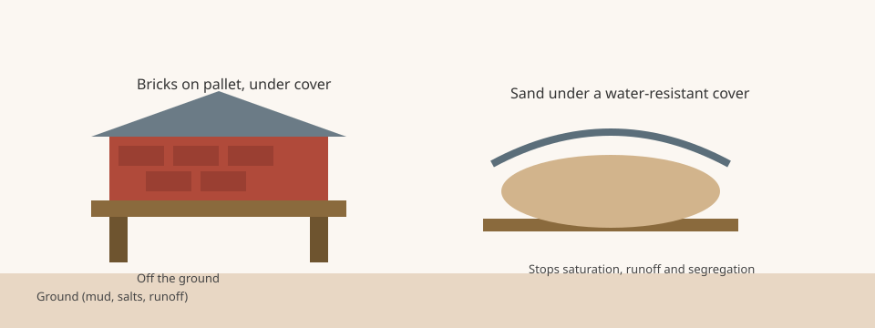

Mortar Smash › Trade guides › Storing bricks on site
Brick, mortar materials and accessories are often delivered in packs or cubes on pallets. How you store them on the job affects staining, efflorescence and, in cold weather, whether units freeze before they are laid. The Brick Industry Association's Technical Note 7B (November 2017) is the main source for the practices on this page. It is a workmanship note, not a substitute for the code edition or specification that governs the job.
Store everything off the ground and keep it covered
BIA 7B says all materials at the jobsite should be stored off the ground to avoid damage and contamination from dirt, groundwater or other matter that may cause stains and that may contain soluble salts that contribute to efflorescence. Masonry units, mortar materials, ties and reinforcement should be stored off the ground, preferably in a dry location, and covered with tarps or other water-resistant materials to protect them from rain, snow and other weather.
Move packs with methods and equipment that limit damage to the units. A strap coming off a cube or a fork punching a pack is a materials loss, not just a handling inconvenience.
Sand, flashing and accessories
Cover sand and other aggregates with a water-resistant membrane, BIA 7B says, to avoid saturation and freezing in cold weather, as well as runoff and segregation of the aggregate. Store flashing where it will not be punctured or damaged, and keep ultraviolet-sensitive materials away from sunlight. Store roll materials on end to avoid creasing. Keep flashing components and joint sealant in unopened, labeled containers at temperatures within the manufacturer's required range.
BIA 7B also says all masonry materials must be stored to prevent freezing, and it points to Technical Note 1 on hot and cold weather construction. Our cold weather bricklaying guide covers protection of newly laid work. Storage of the unused materials is the step before that.
Why this also helps cleaning and salt staining
BIA Technical Note 20, on cleaning brickwork, repeats the same site habit: protect stored brick from mud by keeping it off the ground and under a waterproof covering. That reduces the amount of cleaning the finished wall needs. Ground contact is also a path for salts that later show up as efflorescence.
At the end of the day, BIA 20 also recommends covering wall openings and the tops of unfinished walls with a waterproof membrane, extended at least 2 ft (0.6 m) down each side, so rain does not wash out joints or soak the work. That is protection of the wall, not of the unused packs, but it is the same idea: keep water and mud off the masonry.

Storing bricks on site FAQ
Should bricks sit on the ground if they arrived on pallets?
No. BIA Technical Note 7B (November 2017) says all materials at the jobsite should be stored off the ground to avoid damage and contamination from dirt, groundwater or other matter that may stain the units or contribute to efflorescence.
Do sand piles need a cover too?
Yes. BIA 7B says to cover sand and other aggregates with a water-resistant membrane to avoid saturation and freezing in cold weather, as well as runoff and segregation of the aggregate.
Where should flashing and sealant be kept?
BIA 7B says to store flashing where it will not be punctured, keep ultraviolet-sensitive materials out of sunlight, store rolls on end to avoid creasing, and keep accessory materials such as joint sealant in unopened labeled containers at temperatures within the manufacturer's required range.
Sources
- BIA Technical Note 7B, Water Penetration Resistance – Construction and Workmanship (November 2017)
- BIA Technical Note 1, Hot and Cold Weather Construction (linked from 7B for freeze protection)
- BIA Technical Note 20, Cleaning Brickwork (site storage and covering unfinished walls)
Figures and uses are quoted or condensed from the sources above, which were read on 11 November 2026. Codes and project specifications differ by country and job; where they conflict with this page, follow them.
Published 11 November 2026 by Mortar Smash. General information only, not engineering or code advice.